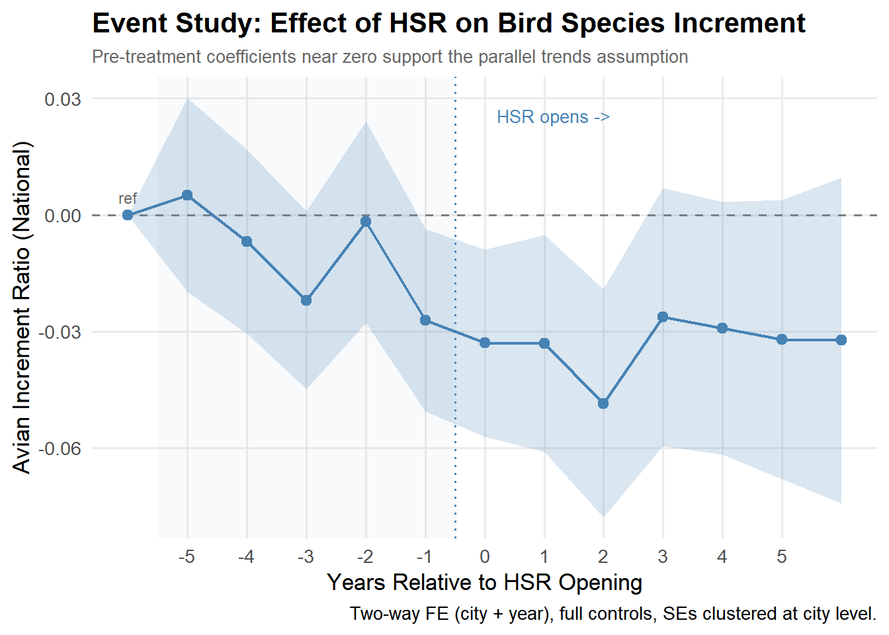

Code
library(tidyverse)
library(here)
library(janitor)
library(jtools)
library(gtsummary)
library(gt)
library(fixest) # fast fixed effects
library(scales) # plottingThe complete code and analysis for this project can be found here: GitHub repository

China has rapidly expanded the availability of high‑speed rails (HSR) over the years since 2001 (Xie & Zhu, 2025). They currently count on 225 operating HSR’s connecting different cities. The construction of HSR leads to changes in land use, noise, habitat fragmentation, and increased human activity. Urban bird communities are sensitive to these changes. Due to this rapid development, cities may be experimenting loss of urban avian biodiversity in areas with HSR. Policymakers want to know: Does HSR harm biodiversity?
We cannot randomly assign cities to simply “get a high‑speed rail” or “not get one”. That is unfeasible. Due to the complexity of this analysis, researchers had to adapt econometric methods for their analysis. We should also note how cities that implement an HSR are systematically different from other cities in China. They tend to be larger, richer, and more connected. Therefore, executing a simple before and after comparison would be misleading.
For example, imagine you have two plants. One gets fertilizer at different times from the other plant. Let’s say you want to compare how their growth changes relative to each other. If the treated plant suddenly grows slower after fertilizer, compared to the untreated one, the fertilizer might be the cause. This is the intuition behind a difference‑in‑difference (diff-in-diff) econometric analysis method. In this blog post, we use a staggered diff‑in‑diff because different cities received HSR at different years, just like the plants getting fertilizer at different times.
For this analysis, we use a simulated dataset. The key outcome being analyzed is bird species richness measured as the annual increment of bird observations in each city. The data represent city‑level panel dataset, which means we use information from the same cities over time. Each row in the dataset represents a city-year observation. The dataset includes a total number of 297 cities observed from 2001 through 2019, with over 5,000 city-year observations. The dataset also includes information on when HSR begins operating in each city, coded as 1 beginning in the year HSR opens and 0 otherwise. Our key outcome variable is species richness. The study measures this as the annual increment in the number of bird species observed in each city. The study uses several control variables to account for factors that may influence bird biodiversity, such as, GDP growth, population, urban road area, PM2.5, green coverage, wind speed, precipitation, humidity, and temperature.
To replicate the analysis, we compare cities before and after HSR implementation. The idea is to first compare cities before and after HSR opening. Then, we also compare cities that receive HSR versus cities that haven’t. This isolates the causal effect under the parallel trends assumption. This means that before HSR construction, cities that eventually receive HSR should follow similar trends in bird species richness as cities that do not receive HSR. If this assumption holds, any change in bird biodiversity after the opening of HSR can be interpreted as the causal impact of the rail system.
The model employed in the study is defined in the following equation:
\[ Y_{it} = \alpha_i + \gamma_t + \beta * HSR_i + X_i\delta + \epsilon_i \] Where:
\(Y_it\) represents the outcome variable. This is the annual increase in bird species richness in city i at time t.
\(\alpha_i\) are the city fixed effects, which control for the time-invariant characteristics of each city.
\(\gamma_t\) are year fixed effects, which capture the national trends affecting all cities.
\(\beta * HSR_{it}\) indicates whether a high-speed rail is operating in that city and year.
\(X_{it}\delta\) represents the control variables
\(\epsilon_{it}\) is the error term
We are particularly interested in the \(\beta\) coefficient. This parameter measures the change in the annual increment of bird species after HSR begins operating in a city relative to cities without HSR and relative to the period before an HSR was introduced.
Like our fertilizer-plant example, HSR’s were not introduced in all cities at the same time. Instead, different cities received HSR service in different years as the network expanded. Because the treatment occurs at different points in time across cities, we cannot use a traditional econometrics diff-in-diff approach that assumes only a single treatment year. Instead, we use a staggered diff-in-diff approach, which allows treatment to occur at different times. In this study design, cities that have not yet received HSR act as the control group for cities that have already received it. This allows us to estimate the causal effect of HSR while accounting for differences in timing.
Using this framework, we replicate the main finding reported in Table 5 of the study.
We start off by loading all the libraries we need to carry out our replication of the causal effect analysis.
library(tidyverse)
library(here)
library(janitor)
library(jtools)
library(gtsummary)
library(gt)
library(fixest) # fast fixed effects
library(scales) # plottingThese packages are used for loading in and wrangling the data (here, janitor, tidyverse, jtools) creating the formatted summary table (gtsummary, gt). To replicate the study and the assumption of parallel trends, we use fixest for the city fixed effects, and scales for plotting.
Next, we load in the simulated dataset.
hsr_data <- read_csv(here("data", "xie2025_simulated_panel.csv")) %>%
mutate(region = as.factor(region),
lat_band = as.factor(lat_band),
city_scale = as.factor(city_scale),
hsr_open_year = na_if(hsr_open_year, Inf))
glimpse(hsr_data)Rows: 5,643
Columns: 32
$ city_id <dbl> 1, 1, 1, 1, 1, 1, 1, 1, 1, 1, 1, 1, 1, 1, 1…
$ year <dbl> 2001, 2002, 2003, 2004, 2005, 2006, 2007, 2…
$ region <fct> East, East, East, East, East, East, East, E…
$ province_id <dbl> 16, 11, 21, 12, 14, 22, 22, 23, 22, 10, 8, …
$ longitude <dbl> 115.3685, 115.3685, 115.3685, 115.3685, 115…
$ latitude <dbl> 33.58173, 33.58173, 33.58173, 33.58173, 33.…
$ lat_band <fct> Middle, Middle, Middle, Middle, Middle, Mid…
$ urbanization <dbl> 0.4561922, 0.4561922, 0.4561922, 0.4561922,…
$ city_scale <fct> SmallMed_TypeII, SmallMed_TypeII, SmallMed_…
$ hsr_open_year <dbl> NA, NA, NA, NA, NA, NA, NA, NA, NA, NA, NA,…
$ treated_city <dbl> 0, 0, 0, 0, 0, 0, 0, 0, 0, 0, 0, 0, 0, 0, 0…
$ hsr_open <dbl> 0, 0, 0, 0, 0, 0, 0, 0, 0, 0, 0, 0, 0, 0, 0…
$ hsr <dbl> 0, 0, 0, 0, 0, 0, 0, 0, 0, 0, 0, 0, 0, 0, 0…
$ event_time <dbl> NA, NA, NA, NA, NA, NA, NA, NA, NA, NA, NA,…
$ gdp_growth_pct <dbl> 17.478207, 4.134449, 8.066696, -2.208690, 1…
$ share_primary_pct <dbl> 11.234107, 10.776536, 16.307881, 21.665077,…
$ share_secondary_pct <dbl> 41.49615, 60.74571, 56.43363, 58.80396, 30.…
$ population_10k <dbl> 163.33633, 476.97134, 317.67522, 282.45103,…
$ urban_road_10k_m2 <dbl> 311.0096, 840.5922, NA, 195.3256, 2710.7530…
$ pm25 <dbl> 36.01086, 31.90835, 56.64050, 33.62142, 29.…
$ green_coverage_pct <dbl> 38.70042, 15.82521, 32.79725, 45.60479, 42.…
$ wind_speed <dbl> 1.386235, 2.205834, 2.281157, 2.122216, 2.4…
$ precip_mm <dbl> 1567.2956, 1082.6532, 778.5542, 1331.5457, …
$ humidity_pct <dbl> 51.30022, 55.13911, 65.77864, 72.68315, 79.…
$ temperature_c <dbl> 21.14684, 19.26411, 15.94478, 10.78163, 20.…
$ H <dbl> 1.0582321, 1.1587507, 1.7682046, 1.0430431,…
$ light <dbl> 3.0665473, 2.2543940, 2.3329006, 10.0784202…
$ passenger_flow_10m <dbl> 0.7427747, 0.0000000, 13.7673256, 9.5306086…
$ species_richness_level <dbl> 337.9585, 337.9585, 337.9585, 337.9585, 337…
$ avian_increment_ratio_natl <dbl> 0.15184283, 0.25087155, 0.38388109, 0.03301…
$ avian_increment_count <dbl> NA, 10, 8, 13, 2, 9, 2, 11, 7, 3, 5, 6, 6, …
$ avian_increment_ratio_prov <dbl> NA, 0.29316210, 0.36112894, NA, 0.36457653,…glimpse() output helps us confirm that the dataset has the expected structure and that the variables are correctly formatted before we begin estimating the models.This section replicates Table 5 from the study by estimating a series of fixed‑effects regressions that progressively add control variables. Each model uses city and year fixed effects to account for unobserved characteristics that are constant within cities or common across years. The key variable of interest is hsr, which indicates whether a city has an operational high‑speed rail line in a given year. By comparing the coefficient on hsr across models, we can see how sensitive the estimated effect is to the inclusion of additional controls.
# Column 1: Economic controls
m1 <- feols(
avian_increment_ratio_natl ~ hsr + gdp_growth_pct + share_primary_pct + share_secondary_pct | city_id + year,
data = hsr_data,
cluster = ~city_id
)
# Column 2: Add demographic control
m2 <- feols(
avian_increment_ratio_natl ~ hsr + gdp_growth_pct + share_primary_pct + share_secondary_pct +
population_10k | city_id + year,
data = hsr_data,
cluster = ~city_id
)
# Column 3: Add infrastructure control
m3 <- feols(
avian_increment_ratio_natl ~ hsr + gdp_growth_pct + share_primary_pct + share_secondary_pct +
population_10k + urban_road_10k_m2 | city_id + year,
data = hsr_data,
cluster = ~city_id
)
# Column 4: Add environmental controls
m4 <- feols(
avian_increment_ratio_natl ~ hsr + gdp_growth_pct + share_primary_pct + share_secondary_pct +
population_10k + urban_road_10k_m2 + pm25 + green_coverage_pct | city_id + year,
data = hsr_data,
cluster = ~city_id
)
# Column 5: Full model with weather controls
m5 <- feols(
avian_increment_ratio_natl ~ hsr + gdp_growth_pct + share_primary_pct + share_secondary_pct +
population_10k + urban_road_10k_m2 + pm25 + green_coverage_pct +
wind_speed + precip_mm + humidity_pct + temperature_c | city_id + year,
data = hsr_data,
cluster = ~city_id
)etable(m1, m2, m3, m4, m5,
keep = "hsr",
headers = c("Economic", "+ Demographic", "+ Infrastructure",
"+ Environmental", "+ Weather"),
digits = 4,
fitstat = c("n", "r2")) m1 m2
Economic + Demographic
Dependent Var.: avian_increment_ratio_natl avian_increment_ratio_natl
hsr -0.0153** (0.0052) -0.0157** (0.0052)
Fixed-Effects: -------------------------- --------------------------
city_id Yes Yes
year Yes Yes
_______________ __________________________ __________________________
S.E.: Clustered by: city_id by: city_id
Observations 4,477 4,075
R2 0.10458 0.11330
m3 m4
+ Infrastructure + Environmental
Dependent Var.: avian_increment_ratio_natl avian_increment_ratio_natl
hsr -0.0151** (0.0051) -0.0160** (0.0052)
Fixed-Effects: -------------------------- --------------------------
city_id Yes Yes
year Yes Yes
_______________ __________________________ __________________________
S.E.: Clustered by: city_id by: city_id
Observations 3,684 3,590
R2 0.12784 0.13207
m5
+ Weather
Dependent Var.: avian_increment_ratio_natl
hsr -0.0165** (0.0052)
Fixed-Effects: --------------------------
city_id Yes
year Yes
_______________ __________________________
S.E.: Clustered by: city_id
Observations 3,590
R2 0.13396
---
Signif. codes: 0 '***' 0.001 '**' 0.01 '*' 0.05 '.' 0.1 ' ' 1etable() function consolidates all five regression models into a single formatted table that resembles the layout of Table 5 in the original study.hsr coefficient because it is the main parameter of interest.hsr remains negative across all model specifications, and are statistically significant.hsr coefficient stays negative and statistically significant (−0.015 to −0.016) even as we add economic, demographic, infrastructure, environmental, and weather controls.sd_outcome <- sd(hsr_data$avian_increment_ratio_natl, na.rm = TRUE)
effect_size <- coef(m5)["hsr"] / sd_outcome
cat("Effect size (col 5):", round(abs(effect_size) * 100, 1), "% of 1 SD\n")Effect size (col 5): 16.6 % of 1 SDNote: A DiD is only valid if the Treatment and Control groups were moving in the same direction before the intervention hit. Let’s see if we pass the parallel trends assumption.
The parallel trends assumption is untestable in a strict sense we can never observe what treated cities would have looked like without HSR. But we can check whether treated and control cities were on similar trajectories before treatment. If pre-treatment coefficients are close to zero and statistically insignificant, this supports the assumption.
The event study model replaces the single hsr indicator with a set of dummies for each year relative to HSR opening:
\[\text{Avian}_{it} = \alpha_0 + \sum_{b \neq -6} \beta_b \cdot \mathbf{1}[\text{event\_time}_{it} = b] \times \text{Treated}_i + \gamma X_{it} + \mu_i + \lambda_t + \epsilon_{it}\]
Each \(\beta_b\) captures the gap between treated and control cities \(b\) years relative to HSR opening, compared to the reference year (here, 6 years before opening).
hsr_es <- hsr_data %>%
mutate(event_time_binned = case_when(
is.na(event_time) ~ NA_real_, # control cities stay as NA
event_time < -6 ~ -6, # bin anything 6+ years before
event_time > 6 ~ 6, # bin anything 6+ years after
TRUE ~ event_time
))Instead of a single hsr dummy (0 or 1), i(event_time_binned, ref = -6) automatically creates one dummy per relative year. Instead of asking “what is the average effect of HSR across all post-treatment years?”, we are asking “what is the effect specifically at year -5, at year-4, at year-3..”etc.. The ref = -6 argument drops year −6 from the regression, making it our baseline that all other years are compared against. This is necessary because not all dummies can be simultaneously estimated, one must be turned off.
Cluster by city_id will allow errors within the same city to be correlated across years, this will produce more honest standard errors and confidence intervals.
es_model <- feols(
avian_increment_ratio_natl ~
i(event_time_binned, ref = -6) +
gdp_growth_pct + share_primary_pct + share_secondary_pct +
population_10k + urban_road_10k_m2 + pm25 + green_coverage_pct +
wind_speed + precip_mm + humidity_pct + temperature_c |
# the two-way fixed effects
city_id + year,
data = hsr_es,
cluster = ~city_id
)
# Extract coefficients with tidy
es_coefs <- tidy(es_model, conf.int = TRUE) %>%
filter(str_detect(term, "event_time_binned")) %>% # only want event-time coefficients
# regex pattern help extra negative value to use on x-axis
mutate(event_time = as.numeric(str_extract(term, "-?\\d+"))) %>%
bind_rows(tibble(event_time = -6, estimate = 0, conf.low = 0, conf.high = 0)) %>%
arrange(event_time)Each dot is a coefficient estimate. Pre-treatment dots (left of the dotted line) should sit near zero — that is the parallel trends check. Post-treatment dots should turn negative, showing HSR’s impact on bird species influx.
es_coefs %>%
ggplot(aes(x = event_time, y = estimate)) +
annotate("rect", xmin = -5.5, xmax = -0.5,
ymin = -Inf, ymax = Inf, alpha = 0.04, fill = "steelblue") +
geom_hline(yintercept = 0, linetype = "dashed", color = "grey50") +
geom_vline(xintercept = -0.5, linetype = "dotted",
color = "steelblue", linewidth = 0.7) +
geom_ribbon(aes(ymin = conf.low, ymax = conf.high),
alpha = 0.2, fill = "steelblue") +
geom_line(color = "steelblue", linewidth = 0.8) +
geom_point(color = "steelblue", size = 2.5) +
annotate("text", x = -6, y = max(es_coefs$conf.high) * 0.15,
label = "ref", size = 3, color = "grey40") +
annotate("text", x = 0.2, y = max(es_coefs$conf.high) * 0.85,
label = "HSR opens ->", hjust = 0, size = 3.5, color = "steelblue") +
scale_x_continuous(breaks = -5:5) +
labs(
title = "Event Study: Effect of HSR on Bird Species Increment",
subtitle = "Pre-treatment coefficients near zero support the parallel trends assumption",
x = "Years Relative to HSR Opening",
y = "Avian Increment Ratio (National)",
caption = "Two-way FE (city + year), full controls, SEs clustered at city level."
) +
theme_minimal(base_size = 13) +
theme(
plot.title = element_text(face = "bold"),
plot.subtitle = element_text(color = "grey40", size = 10),
panel.grid.minor = element_blank()
)
The core question the plot is answering: Were treated cities and control cities already moving differently before HSR opened? If yes, any post-treatment difference could just be a continuation of that pre-existing gap rather than HSR causing it.
The reference point: Year -6 anchored at 0
The pre-treatment period (left side of the plot): Most estimates are close to zero. The line hovers near zero from -5 through -2 before dropping at -1. The confidence intervals are very wide and clearly cross zero through this window, meaning none of the pre-treatment dips are statistically distinguishable from zero. Note: The dip at -3 looks alarming visually but the ribbon around it is huge-you cannot confidently say it is different from zero. Random variation in simulated data will produce bumps and dips like this even when there is no real pre-trend. Year -1: One year before opening; the estimate drops noticeably and confidence interval start to tighten. This is consistent with the paper’s find that HSR construction, which typically begins 1-2 years before a line opens, already starts affecting bird species influx. Earthworks, tunnel excavation, and habitat disruption begin before the first train runs.
Post-treatment period(right side of the plot): The negative effect persists across all post-treatment years, which tells you the impact is not just a short-term shock-cities with HSR continue to attract a smaller share of new bird species compared to cities withiout HSR. The wide confidence intervals in later years (+3 to +5) reflect fewer cities have been treated long enough to contribute observations that far out, so estimates become noisier.
The paper’s key finding: the decline begins two years before HSR opens, corresponding to the construction phase. This is an important substantive result environmental damage starts before trains run. Important note: Our plot does not show the clean flat pre-trend reported in the paper.Instead, we observe a dip at -3 and the decline begins at -1 rather than -2 as shown in the paper. These differences are likely artifacts of the simulated data rather than evidence of a true pre-trend violation, since the confidence intervals are wide throughout the pre-treatment period. We can confirm this formally, none of the pre-treatment coefficients are statistically distinguishable from zero (all p-values > 0.05), meaning the wide confidence intervals throughout the pre-treatment window all cross zero. A true parallel trends violation would require a pre-treatment estimate that is both large in magnitude and statistically significant. Neither condition holds here. Simulated data will not perfectly replicate the exact pre-trend shape in the original paper, but the key takeaway is that the pre-treatment estimates remain statistically insignificant in our plot.
Causal identification and statistical assumptions
The identification strategy is reasonably credible. We use a staggered difference-in-differences design, exploiting the fact that HSR openings rolled out across 297 Chinese cities in different years between 2007 and 2019.
The simulated Table 5 provides the main evidence in favor of a causal interpretation, with results similar to those in the paper: the HSR coefficient is stable across all five specifications, shifting only from −0.015 to −0.016 as economic, demographic, infrastructure, environmental, and weather controls are added one group at a time. This stability matters because if the result were driven by a particular confounder, removing that variable should cause the coefficient to move substantially. The fact that it barely changes suggests the estimate is not relying on any single observable variable.
For the analysis to be considered causal, the following statistical assumptions need to hold:
HSR placement must be random conditional on city and year fixed effects and the control variables. Since HSR routes were explicitly planned to connect large, economically strategic cities and were not randomly assigned, this is one of the conditions that does not hold.
Treated and control cities would have trended similarly in the absence of HSR (parallel trends). Our analysis tests this, and the pre‑treatment coefficients are broadly similar between groups, though not perfectly flat.
Cities did not change behavior before HSR officially opened in anticipation of it (no anticipation). The event study shows that the decline begins shortly before the official opening year. The paper interprets this as reflecting the construction phase rather than behavioral responses by cities in anticipation of HSR. This connects directly to the selection bias concern: because HSR cities were already larger and more economically active, they were also more likely to have ongoing construction and urban development activity in the years leading up to HSR opening.
Each city’s outcome is unaffected by other cities’ treatment status (SUTVA). This assumption is likely violated to some degree, since birds are mobile across city boundaries.
Given the scope of the analysis and the available data, we consider the evidence for the effect of HSR on urban bird biodiversity to be plausible.
Sampling and external validity
The sample covers all 297 Chinese prefecture-level cities from 2001–2019. It is not a random sample, county-level cities and non-Chinese cities are excluded, and the 222 treated cities skew eastern and toward larger urban centers.
Results generalize most directly to large, rapidly urbanizing cities in countries undertaking fast, large-scale rail expansion, where the speed of construction and the gap between environmental standards and enforcement are similar to China’s 2007–2019 context.
Measurement
Our analysis is based on a simulated panel dataset built to match the original study’s summary statistics and treatment effect. The key outcome variable carries a potential systematic bias: avian_increment_ratio_natl is constructed from GBIF citizen-science records, voluntary birdwatcher submissions, rather than a systematic ecological survey. The density of records depends on how many people are actively observing birds in a given city and year. The paper controls for observer effort, but since it relies on a proxy rather than a direct count of submissions, this concern cannot be fully dismissed.
Other limitations
Simulated data: Results rely on simulated data, which may not fully capture real‑world ecological dynamics.
Other confounders: Unobserved factors could still bias the estimates despite extensive controls. For example, local environmental policies, proximity to nature reserves, or regional industrial activity are not captured in the data but could independently influence bird species richness in ways that correlate with HSR placement.
Cities already expanding: Some treated cities were already experiencing rapid urban expansion, making it harder to isolate the effect of HSR.
Xie, J., & Zhu, M. (2025). Exploring the ecological impacts of high-speed rail on urban avian biodiversity. Journal of Cleaner Production, 502, 145351. https://doi.org/10.1016/j.jclepro.2025.145351